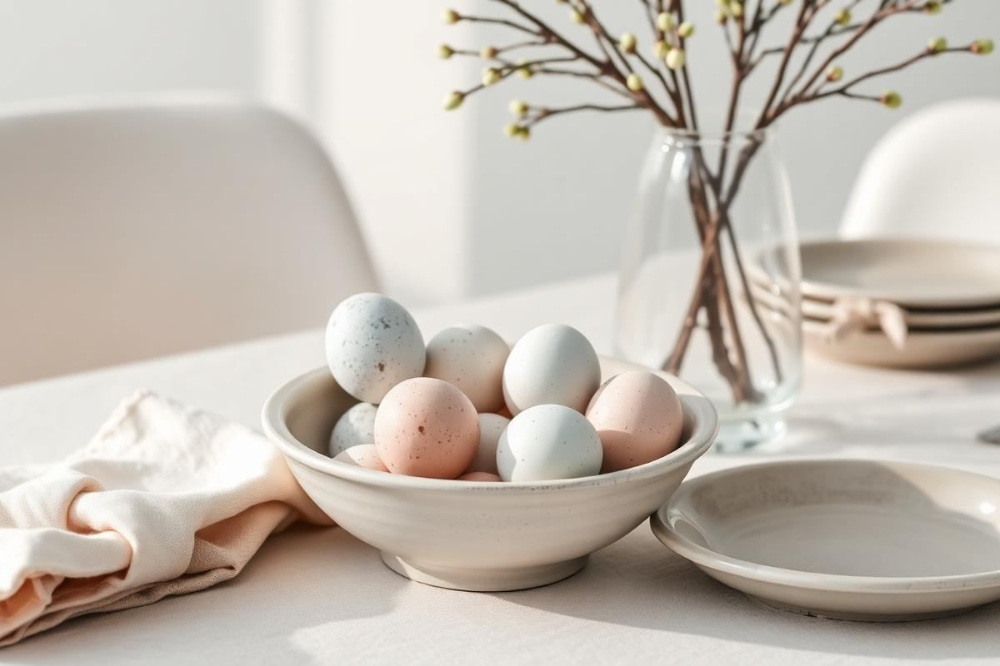
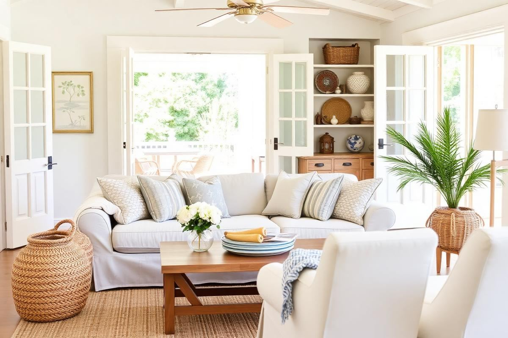

Easter Decor Ideas That Aren't Twee

Easter Decor Ideas That Aren't Twee is one of those topics where a little planning goes a long way. In this guide I walk through the process we use in real homes — not just what looks good in a photo, but what actually holds up over time.
Start here
Before you buy or move anything, measure the space and note how you actually use it. The best-looking room is one that matches how you live, so start with the routines: where you sit, where you drop keys, where the light falls in the afternoon.
The essentials
Focus on the pieces that do the most work. Get those right and the rest of the room comes together with much less effort. Aim for materials that patina rather than degrade, and colors you will still like in five years.
- Choose one clear focal point per room.
- Pick materials that improve with age.
- Layer textures instead of adding more colors.
- Leave visual breathing room — negative space is a design element.
Common mistakes
The mistakes we see most often are matching everything too tightly, over-scaling accessories, and skipping proper lighting. Fix those three and most rooms improve overnight.

Elevating Your Easter Tablescape
For a truly sophisticated Easter gathering, your tablescape is paramount. Forget the plastic eggs and paper bunnies. Instead, focus on natural textures, elevated color palettes, and thoughtful arrangements. Start with a foundation – a linen tablecloth in a soft, muted tone like sage green, pale blue, or a creamy off-white. Avoid stark white, as it can feel too formal and less inviting for a spring celebration. Source napkins from the same fabric family, perhaps with a subtle embroidered edge from a brand like Sferra, typically retailing around $20-$30 per napkin. Rather than one large centerpiece, opt for a series of smaller, low-profile arrangements down the center of the table. This allows for easier conversation and a more dynamic visual flow. Three small bouquets of tulips or ranunculus in varying heights, nestled in simple ceramic bud vases (think handmade earthenware from artisans on Etsy for roughly $15-$25 each), are far more impactful than a single towering arrangement.
Subtle Gifting and Place Settings
Incorporate small, personalized gifts at each place setting. A single perfectly ripe pear or a small sprig of lavender tied with a velvet ribbon adds a touch of luxury without being excessive. For place cards, consider using pressed botanicals, such as a dried fern leaf, with a guest’s name hand-lettered on a small, heavy cardstock rectangle (approx. 2”x3”). Secure with a tiny dab of non-toxic craft glue. These thoughtful details elevate the dining experience and create a lasting impression. Invest in quality flatware and glassware – your everyday pieces might suffice if they are well-maintained, but a delicate, thin-rimmed wine glass (like Riedel's Ouverture collection, around $40 for a set of 4) instantly upgrades the setting.
Beyond the Dining Room: Entryways and Mantels
Easter decor shouldn't be confined to the dining table. Extend the sophisticated spring theme to your entryway and mantelpiece. For the entryway, a large, unstructured floral arrangement showcasing branches of blossoming forsythia or quince in a tall, ceramic vase (a substantial piece around 18-24 inches tall could be $80-$150) immediately sets a welcoming tone. Add a natural fiber doormat with a subtle geometric pattern rather than a novelty Easter design. For a console table, arrange a curated vignette: a vintage bird's nest (empty, of course, and ethically sourced from antique shops, for $10-$30) alongside a stack of linen-bound books in soft hues and a single unscented candle in an interesting holder. Avoid over-accessorizing; space and simplicity are key here.
Mantelpiece Makeover
On the mantel, eschew plastic eggs for real, hand-blown glass or ceramic eggs (available from art markets or specialty decor stores for $5-$15 each). Arrange these in a shallow wooden bowl or a woven basket. Anchor the display with a substantial piece of art – a landscape painting featuring soft spring colors or an abstract piece with organic shapes. Flank the art with two matching ceramic vases, each holding a single architectural branch, like curly willow or dogwood, for an asymmetrical yet balanced look. If you have a fireplace, consider a cluster of pillar candles in varying heights within the hearth for ambient light, especially in the evening.
Natural Elements and DIY Touches
Embracing natural elements is fundamental to creating an Easter aesthetic that feels chic and not childish. Think beyond cut flowers. Gather interesting twigs, moss, smooth river stones, and even emptied, cleaned birds' nests from your garden or local craft store. These items, when thoughtfully arranged, contribute to an organic, earthy feel. Consider creating a simple garland for a doorway or staircase banister using twine and intertwined foraged branches, perhaps adding a few delicate pastel ribbons or small paper white narcissus blooms. This takes little time (approx. 30-45 mins) and costs next to nothing. A large bowl of green apples or lemons also serves as a beautiful and fragrant centerpiece, offering a pop of fresh color. The key is to let the beauty of nature speak for itself, rather than overwhelming it with artificial embellishments.
Elegant DIY Accents
For a subtle DIY touch, try dyeing real eggs with natural dyes using ingredients like red cabbage for blue, onion skins for orange, or turmeric for yellow. This process yields nuanced, painterly hues that are far more sophisticated than store-bought dyes. Gently blow out the yolks first for eggs that can be reused year after year. Store carefully in tissue paper until next spring. Display these naturally dyed eggs in clear glass cloches or on a multi-tiered fruit stand for an artful presentation. This method typically takes an afternoon to complete properly, yielding about a dozen beautifully colored eggs for under $10 in materials. Avoid glitter or synthetic embellishments on these natural elements; their inherent beauty is enough.
Lighting and Ambiance
Lighting plays a critical role in setting the tone for any holiday, and Easter is no exception. Move away from harsh overhead lighting. Instead, focus on creating layers of soft, warm illumination. Strategically placed table lamps with linen shades can provide a welcoming glow. Consider swapping out bright LED bulbs for warmer, lower-wattage options (around 2700K Kelvin for a cozy feel) for the duration of the holiday weekend. Pillar candles of varying heights in hurricane lamps or on solid brass trays add an instant touch of elegance and warmth, especially in the evening. Ensure candles are unscented, or use very subtly scented ones like white tea or a gentle floral, to avoid clashing with food aromas.
Beyond Candles: Unexpected Light Sources
- Battery-operated fairy lights: Woven into a tablescape greenery runner or tucked into a large glass cloche with faux moss for a subtle twinkle. Opt for warm white lights, not cool white. (A 10-foot strand is typically under $10.)
- Uplighting: Small floor lamps or puck lights strategically placed behind larger plants or furniture to cast soft shadows and highlight architectural features.
- Dimmers: If your home has overhead lights on dimmers, utilize them. Dimming ambient light by just 20-30% can dramatically alter a room's atmosphere, making it feel more intimate and refined.
These layers of light work in concert to create a sophisticated, inviting atmosphere that encourages lingering and conversation, perfect for a refined Easter celebration.
Textile Choices and Patterns
The textiles you choose for Easter decor – from throws to cushions – significantly contribute to the overall aesthetic. Avoid overtly seasonal patterns like cartoon bunnies or neon eggs. Instead, lean into classic spring motifs and delicate textures. Think jacquard weaves, subtle floral prints (like a block-printed botanic, rather than a busy chintz), or tone-on-tone damasks. Linen, cotton blends, and even light wools in soft blush, periwinkle, or mist green are excellent choices. A throw blanket draped artfully over a sofa in a woven basket can instantly add warmth and texture. Look for throws with subtle fringe or a waffle weave, typically around $50-$100 from home goods stores like Pottery Barn or West Elm during sale events.
Cushions and Window Treatments
Swap out heavy winter cushion covers for lighter, more playful options. Consider cushion covers with embroidered details, subtle gingham checks in muted tones, or even a classic stripe. Ensure the patterns and colors complement your existing furniture rather than clashing. A set of two 18”x18” decorative cushion covers can be acquired for $30-$60. For window treatments, if you typically use heavy drapes, consider pulling them back entirely during the day to maximize natural light. If privacy is needed, swap them for sheer linen or cotton voile panels in a soft white or cream. These allow light to filter in beautifully, creating an airy, fresh feel that is quintessential for spring. This simple change, often under $100 for a pair of panels, has a profound impact on a room’s brightness and mood.
Key takeaways
- Match the room to how you actually live.
- Anchor with one main piece and clear lighting.
- Layer textures, not colors.
- Leave breathing room around every object.
Frequently asked questions
Where should I start?
Start with the largest piece and the light. Everything else — art, textiles, small objects — is easier to place once those two anchors are set.
What is a realistic budget?
Prioritize the pieces you touch every day. Spend more on those and less on decorative items, which are easy to swap over time.
How long should this last?
A well-chosen main piece should last 10–15 years. Refreshes come through textiles, art, and accessories, not full replacements.

Sophia Bennett is a certified interior stylist and the senior editor at Styleire. She has spent more than eight years helping homeowners and renters create warm, functional interiors, with hands-on experience across small city apartments and family homes. Her work has been informed by close collaboration with independent designers, craftspeople, and product testers.
View full profile →Related reading

How to Build a Warm Neutral Color Palette for Your Home
Warm neutrals are the safest and most flattering base for a whole-home palette. Here is how to build one on purpose.

Spring Home Refresh: 10 Small Changes
Spring Home Refresh: 10 Small Changes — a clear, editor-tested guide covering the essentials without the filler.

Summer Home Decor Ideas That Feel Effortless
Summer Home Decor Ideas That Feel Effortless — a clear, editor-tested guide covering the essentials without the filler.